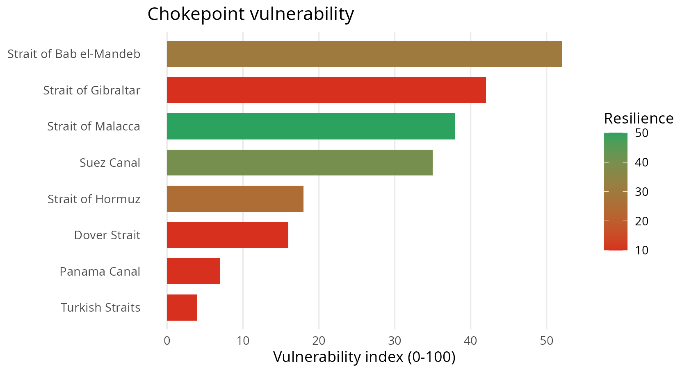
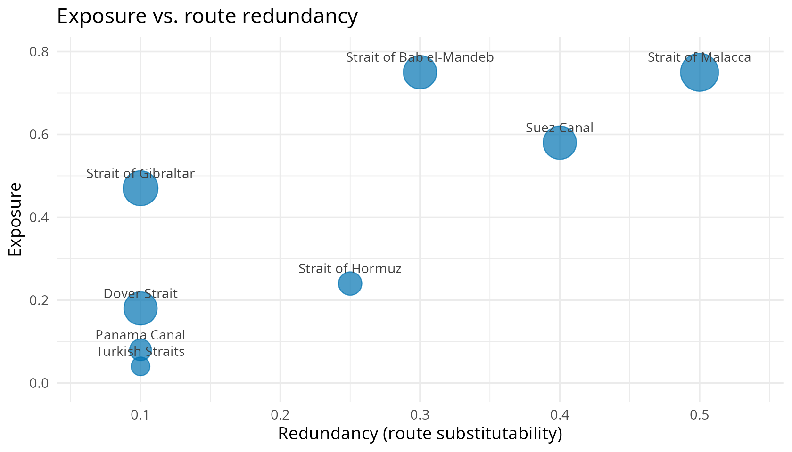

What is chokepointR?
A large share of seaborne trade — and most seaborne oil — must pass through a handful of maritime chokepoints: canals such as Suez and Panama, and straits such as Hormuz, Malacca, Bab el-Mandeb, Gibraltar, the Turkish Straits and Dover. When one is disrupted, the shock propagates through global value chains.
chokepointR profiles the resilience of
these 8 chokepoints. It answers:
How much does world trade depend on each chokepoint, how substitutable is it, what has actually gone wrong there — and how vulnerable does that make it?
It is not a measure of global value chains themselves; it supplies the risk / resilience layer that supply-chain and GVC analysis needs.
Dataset at a glance
library(chokepointR)
c(resilience = nrow(chokepoint_resilience),
incidents = nrow(chokepoint_risks),
chokepoints = nrow(chokepoints),
risk_types = nrow(risk_types))
#> resilience incidents chokepoints risk_types
#> 8 15 8 11
# incident coverage and period
range(as.integer(substr(chokepoint_risks$incident_year, 1, 4)))
#> [1] 2019 2025
table(chokepoint_risks$risk_category)
#>
#> Political and institutional risk Security and conflict risk
#> 6 7
#> Weather and climate risk
#> 2The resilience profile
cp_resilience() returns one row per chokepoint with
importance, dependency, systemic-risk and redundancy measures, plus two
composite indices.
cp_resilience()[, c("location", "trade_value_bn_usd", "n_dependent_countries",
"evtd_bn_usd", "resilience_index", "vulnerability_index")]
#> location trade_value_bn_usd n_dependent_countries evtd_bn_usd
#> 1 Strait of Bab el-Mandeb 1858.5 45 4.16
#> 2 Strait of Gibraltar 2035.6 52 0.06
#> 3 Strait of Malacca 2428.5 52 1.07
#> 4 Suez Canal 1850.3 44 2.07
#> 5 Strait of Hormuz 885.1 18 0.46
#> 6 Dover Strait 1836.2 22 0.00
#> 7 Panama Canal 759.6 15 0.56
#> 8 Turkish Straits 551.1 15 0.17
#> resilience_index vulnerability_index
#> 1 30 52
#> 2 10 42
#> 3 50 38
#> 4 40 35
#> 5 25 18
#> 6 10 16
#> 7 10 7
#> 8 10 4How the indices are built (transparent, equally-weighted default):
-
importance_scoreblends normalised maritime trade value and oil transit. -
exposure_score= mean of importance, dependency and systemic-risk scores. -
resilience_index=100 * redundancy_score(route substitutability). -
vulnerability_index=100 * exposure_score * (1 - redundancy_score)— high stakes with few alternatives.
All component scores ship in the data, so you can re-weight them for your own definition of resilience.

Plotting exposure against redundancy shows the two forces behind the index — the top-left (high exposure, low redundancy) is where systemic risk concentrates.

Explore the incidents
The chokepoint_risks log records documented disruptions.
Search in plain language:
cp_search("drought Panama")[, c("location", "incident_year", "incident")]
#> location incident_year
#> 1 Panama Canal 2023
#> 2 Panama Canal 2023-24
#> incident
#> 1 A severe El Nino drought forced the Panama Canal Authority to cut daily transits to about 32 ships by August 2023, producing a backlog of roughly 115 waiting vessels.
#> 2 Record-low water in Gatun Lake pushed the canal to reduce daily crossings to 24 from 7 November 2023 with tightened draft limits before rains allowed transit slots to be raised again through 2024.Filter on any dimension with cp_data():
cp_data(locations = "Strait of Bab el-Mandeb")[, c("incident_year", "risk", "incident")]
#> incident_year risk
#> 1 2023 Conflict
#> 2 2024 Conflict
#> 3 2024 Conflict
#> 4 2024 Conflict
#> 5 2025 Conflict
#> incident
#> 1 Houthi forces used a helicopter to board and seize the vehicle carrier Galaxy Leader in the southern Red Sea on 19 November 2023, holding its 25 crew for more than a year.
#> 2 The fertiliser-laden bulk carrier Rubymar, struck by a Houthi missile on 18 February 2024, sank on 2 March 2024, becoming the first vessel lost in the Red Sea campaign.
#> 3 A Houthi anti-ship missile struck the bulk carrier True Confidence in the Gulf of Aden on 6 March 2024, killing three seafarers in the first fatal attack of the campaign.
#> 4 The Greek-flagged crude tanker Sounion, carrying nearly one million barrels of oil, was set ablaze and disabled by projectiles near Hodeidah on 21 August 2024 in an attack attributed to Houthi forces, raising fears of a major spill.
#> 5 Houthi forces sank the bulk carriers Magic Seas and Eternity C in the Red Sea in early July 2025, killing at least three crew and taking others captive in a sharp re-escalation of attacks.Map them in one call (interactive leaflet, coloured by risk level):
cp_map(category = "Security and conflict risk")Reference: the risk taxonomy
| Risk | Risk Category | Risk Code |
|---|---|---|
| Temperature extremes | Weather and climate risk | W-T |
| Flood and drought | Weather and climate risk | W-F/D |
| Storms | Weather and climate risk | W-S |
| Haze and fog | Weather and climate risk | W-H/F |
| Conflict | Security and conflict risk | S-C |
| Terrorist attack | Security and conflict risk | S-T |
| Piracy | Security and conflict risk | S-P |
| Cyberattack | Security and conflict risk | S-C/A |
| Trade and transit controls | Political and institutional risk | P-T |
| Disrepair | Political and institutional risk | P-D |
| Unforced delays | Political and institutional risk | P-U |
Live hazard signals (optional)
cp_signals() fetches recent natural-hazard events
(public-domain USGS earthquake data) near a chokepoint. It needs an
internet connection and returns NULL when offline.
cp_signals("Strait of Hormuz", days = 90, min_magnitude = 4.5)Data, provenance and citation
chokepointR ships facts with
attribution. Trade-dependency and systemic-risk measures build on
Verschuur & Hall (2025, Nature Communications; data CC BY
4.0); oil transit is from the U.S. EIA (public domain); incidents carry
per-row citations. See DATA-PROVENANCE.md for full
notes.
citation("chokepointR")
#> To cite the chokepointR package in publications, please use:
#>
#> Warin, Thierry (2026). chokepointR: Global Trade Chokepoint Risks and
#> Resilience. R package version 0.4.0.
#> https://github.com/warint/chokepointR
#>
#> A BibTeX entry for LaTeX users is
#>
#> @Manual{,
#> title = {chokepointR: Global Trade Chokepoint Risks and Resilience},
#> author = {Thierry Warin},
#> year = {2026},
#> note = {R package version 0.4.0},
#> url = {https://github.com/warint/chokepointR},
#> }
#>
#> The resilience profile's trade-dependency, systemic-risk and network-
#> centrality measures are computed from Verschuur & Hall (2025),
#> 'Maritime chokepoint dependencies and systemic risks', Nature
#> Communications; data on Zenodo (CC BY 4.0),
#> doi:10.5281/zenodo.13841881. Please cite that work as well when using
#> those columns.